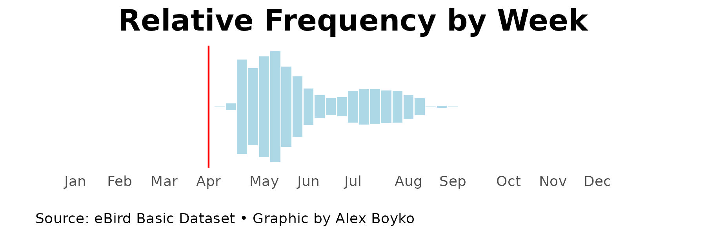

Title To Be Determined
Back in 2017, Tamima Itani was a new birdwatcher, in her first full year with the hobby. While wrapping up a call with the president of the Illinois Ornithological Society, he mentioned that a piping plover had been spotted in Waukegan.
What are Piping Plovers?
Piping plovers are a small, pale-colored shorebird. Adults in their breeding plumage are recognizable by a thin black collar and stripe across their forehead, with an orange and black bill. They are around six to seven inches in length and weigh between 1.5 and 2.2 ounces.
In 1986, the U.S. Fish and Wildlife Service designated the population of plovers in the Great Lakes region as endangered.
All media is from All About Birds

How Can I See Them?
Piping plovers are most frequently found within a few feet from the water's edge, where they feed. Watch out, as their coloration makes for great camouflage, and they are often heard before they are seen.
They can only be found in the Chicago area around breeding season, so keep an eye out at Montrose Beach for them between April and September.

For more information about migration habits and recent sightings, check out eBird, or consult the migration map and checklist dashboard below.
Like many others at the time, Itani didn’t know what a piping plover was, but after learning about the species, decided it was a trip worth taking. And it ended up paying off. She ended up seeing the plover that had been hanging around, a juvenile hatched earlier that summer, and spotted another a few days later.
Although she didn’t know at the time, the first two plovers she ever saw would end up becoming a flagship couple in Chicago. Two years later, these two little birds became the first of their species to nest in Cook County in 71 years, and Itani was there, ready.
In the spring of 2019, these same plovers returned to Chicago’s lakeshore, this time to the beach at Montrose Point Bird Sanctuary, where they spent the end of their summer a few years before. Once again, Itani began hearing reports of plovers.
Now a more seasoned birdwatcher, she visited Montrose Beach throughout May, taking pictures of the plovers she saw and keeping track of their bands. On June 3, she witnessed a courtship display between the pair, including nest-scraping behavior, which caused her to contact others in the area.
Piping plovers are a nationally protected species, and at points in the 1980s it’s estimated only 13 pairs lived in the Great Lakes region, so the prospect of a new nesting site in Illinois was a big deal.
Communicating with others proved to be clunky, and referring to the individuals by the sequence of colored bands on their legs in texts and emails led to confusion.
“I’m just going to name the male 'Monty' and the female 'Rose' after Montrose . . . spur of the moment, right there on the beach” — Tamima Itani
Suddenly, the story of these two little birds is completely recontextualized. In the minds of the teams of people working on the conservation effort, the banded plovers were always unique individuals. But to a broader audience, names break the anonymity. Monty and Rose become characters, members of the Chicagoland community. The themed names certainly didn’t hurt.
Around these characters, a mythos can be built. They have backstories that interest us — a hero’s journey to overcome insurmountable odds.
We begin to notice the more "human" traits in them as well. Monty and Rose’s personalities shine through, and we find comfort in their family, relish in their triumphs, empathize with their hardships, and mourn their loss.
So, when a music festival was scheduled to take place right beside their nesting grounds, the story spread across local media like wildfire.“It was really a big public fight that the newspapers picked up on and I think that’s where Monty and Rose started becoming famous in Chicago because the newspapers just absolutely loved covering that story … the big, bad corporate guys versus two endangered plovers” – Tamima Itani
Their story broke containment, and for the rest of the summer and after the beaches reopened after the COVID-19 pandemic, people flocked to visit Monty and Rose.
Attention is one thing, but with it comes the opportunity for more — engagement. This character-building didn’t just increase the number of visits, it meant people were interacting with the plovers in a different way. They were forming a bond.
From 2021 to 2024, for all other bird sightings in Cook County, users on eBird leave comments under 7% of the time. For the piping plovers, that jumps to over 23%. They also use exclamation marks five times as often, the highest of any of the top 150 species.
For some, visiting the plovers at Montrose Beach is like visiting family, and this has a massive impact on the conservation effort. Despite never having more than seven plovers on the beach, volunteers continue to reach out in droves.
This year, there are three plovers at Montrose: the prodigal son Imani, the captive-reared Sea Rocket, and Pippin, who originally hatched in Wisconsin. There are over 100 volunteers.
Because of this, Itani and the other volunteers are able to monitor every day during the breeding season, in two-hour shifts from 6 a.m. to 8 p.m. This wealth of resources is rare, and greatly appreciated.
I’ve volunteered with a similar project organized by the New Hampshire Department of Fish and Game, which has seen great success in recent years. Piping plovers were believed to be absent from the state entirely in 1996, and in 2023, more than 35 chicks fledged that year alone.
That effort spans two towns and multiple miles of public beach, far larger and busier than Montrose, and has had less than 20 volunteers per year.
There are a lot of factors that impact how successful a conservation effort will be, and a key difference between these two sites is the identifiability of its birds. Every bird at Montrose Beach has colored leg bands, and this means both over the span of a summer and multiple years, a single bird can easily be tracked.
As Itani put it, “every plover has bands and we end up naming them … people come to the beach and say ‘Are Imani and Sea Rocket and Pippin here today?’ They know them. It's not an abstract bird, it’s an individual.”
With that much exposure, a sense of kinship forms. In his fifth year on the beach, Imani in particular has cultivated a devout following.
Although it’s highly likely that some of the same plovers are returning to New Hampshire, they lack bands, and there’s no way to say for certain.
Without individuality, these birds can’t become mythologized in the same way. They remain nameless.
Even though there are multiple times more plovers in New Hampshire, they’re marked in a lower proportion of eBird checklists than the ones in Chicago. This past year, there were 12 times more checklists than the most seen at a single time. In Chicago, that number was 266.
It’s hard to understate the power a good story can have.
Despite recent successes, like the two in Chicago and New Hampshire, piping plovers are still vulnerable across the United States, particularly the population in the Great Lakes region, which comprises roughly 200 of an estimated 8,000 total individuals.
Despite their best efforts, from chasing off potential nest-raiders leagues bigger than themselves to surprisingly efficient renesting, piping plovers face many obstacles each breeding season.
Monty and Rose overcame a skunk-related setback in 2021. A few years later, Sea Rocket had her foot tangled in a fishing line, and it’s partially for that reason that Itani warns upcoming graduates to be wary of their balloons. Their strings can either entangle wildlife or be ingested, both of which pose a significant risk. Monty and Rose also had their nest disturbed in the middle of the night by a balloon in 2021, however, it was luckily retrieved by a member of the Fish & Wildlife Service.
Recently, a large storm hit coastal New Hampshire, and the majority of nests were washed away at both sites.
Setbacks like these are tragic, and what follows is largely influenced by conservation efforts. We know the plovers will do all they can — they’ve proven time and time again how resilient they are. In those moments, it’s our turn to show up.
These moments showcase just how powerful the storytelling aspect of conservation can be. A few simple decisions, to band and name the plovers nesting at Montrose Beach, helped push their story into the spotlight, and because of it, those still here today have over a hundred pairs of hands to help them.